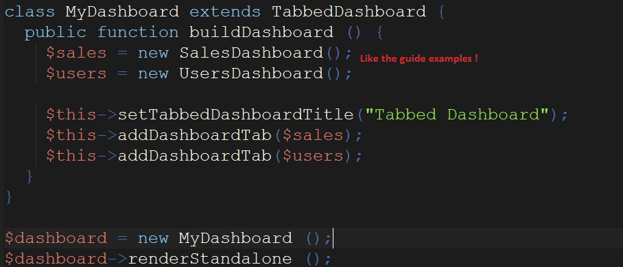

Now you should be able to add some basic Dashboards to your project. It doesn't take long at all once you get the basics down. Here, I'll kinda go through a lightning round on answer some questions that I've seen on the forums.
This is a cool feature, but I find that it doesn't make your site very readable. Your user has to make an extra click to get to the info.
Nevertheless, if needed, it' not very hard.
Step 1: Create multiple extensions of the Dashboard class. [mypersonalDashbard extends Dashboard]
Step 2: Create a TabbedDashboard Object.
Step 3: Add the multiple Dashboards to the Tabbed Dashboard.

This is not hard to do, just hard to find in the documentation.
Instead of calling the 'addSeries' method, you call the 'setPieValues' as shown here, midway
down the page.
In the addComponent method, you can specify:
'numberPrefix' => "$"
'numberDecimalPoints' => 0
'numberSuffix' => "nd"
'numberHumanize' => 'true', uses suffix K,M,B to denote thousand, million, billion
The dashboard is rendered on a 12-column grid. Size is set with the setDimensions method.
You can have the same types of Dashboards and Components as the PHP library.
Most of this is geared towards form data instead of databases.